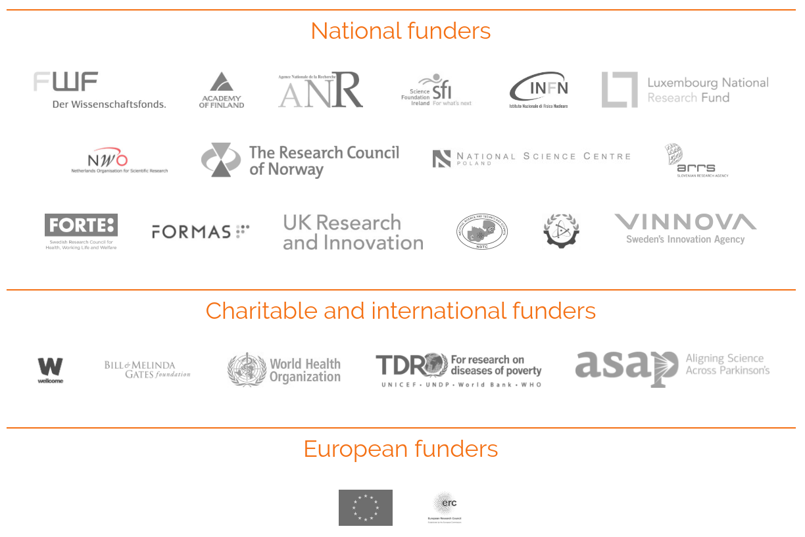
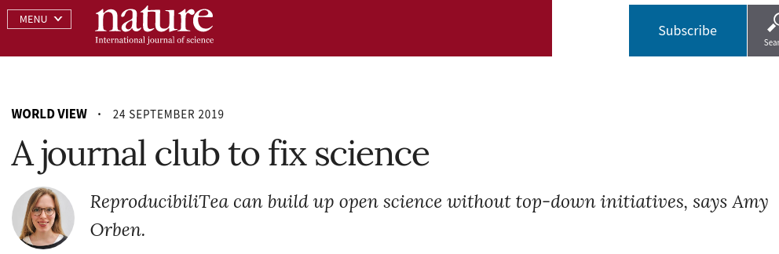

October 2, 2019
Open Science
Open Science
- The most other scientists see of your research is the paper at the end
- Yet even this is not accessible to many scientists or the public
- More than just access to the published results
- Data?
- Methods?
- Code?
- Statistics?
- Hypotheses?
Reproducible Science…?
- Is your science accessible?
- Is your science reproducible?
- How would we know…?
Reproducibility
- Much of Open Science is about reproducibility and trust
- Reproducibility is the essence of science
- Amgen tried to replicate 53 landmark studies in basic cancer research (Begley & Ellis, 2012)
- They could reproduce just 6
- See Nature pieces from 8 October 2015
Open Access
Open Access
- Who owns copyright on the average paper in a standard journal?
Author Rights
- Almost certainly not the authors!
- Rights transferred to publisher
- OA is about retaining your rights & maximizing access to research outputs
Open Access
© Piled Higher & Deeper Publishing LLC — CC BY
Models
- Two main models
- Gold
- Green
Gold OA
- Publish in an OA journal
- Immediate & open access to published version
- Often authors incur an APC
- But majority of OA journals charge no APCs
Green OA
- Self-archiving
- Upon being accepted, deposit authors version in a repository
- Institutional
- Domain specific
- Usually, journals impose an embargo period
- Important to check what journals allow you to do
- after all you’ve signed away copyright!
Hybrid Journals
- Another type of publishing model
- Allows OA within otherwise closed journal
- Involves payment of APCs
- Allows traditional venues for papers…
- …but supports big STEM publishers
Licences
- Open Access is largely a copyright issue
- Author owns the copyright on their works — “awarded” at point of creation
- Right up to the point the author signs it over
- What others can & can’t do with your works depends on licence terms
Creative Commons
- Creative Commons or CC licences are very common in OA publishing
- BY — By attribution
- SA — Share-alike
- NC — Non-commercial
- ND — No derivatives
CC-BY
- The most permissive of the CC copyright licences
- Anyone can reuse a work, do anything with it, so long as they attribute the original source

Berlin declaration
“…a free, irrevocable, worldwide, right of access to, and a licence to copy, use, distribute, transmit and display the work publicly and to make and distribute derivative works, in any digital medium for any responsible purpose, subject to proper attribution of authorship…”
Berlin Declaration on Open Access to Knowledge in the Sciences and Humanities
APCs
- Article Processing Charges
- What you pay to the publisher to cover their costs of publishing & making available your manuscript
- What you pay varies widely
- Majority of OA don’t charge any APCs
From the free (beer)…
- Many Gold OA journals do not charge APCs
…to the sublime…
- The PeerJ has an author subscription model
- $399 / $349 / $499 1-off fee
- 1 / 2 / 5 pubs in 12 month period
- All authors on a paper need a subscription
- Recently announced a $1095 APC as alternative
…to the sublime…
- Ubiquity Press
- Works with scholarly societies & scientists on new OA journals
- £400 / $525 APC

…to the ridiculous
- American Chemical Society OA APCs
- Additional $1000 for CC licences

Rise of the mega journals
- New journals like PLOS One, Scientific Reports
- Lower APCs than traditional publishers: $1495 $1675
- PLOS One will also waive fees if no funding source
- Mega journals often have different review criteria; work required to only be technically sound
Plan S
Plan S is an Open Access publishing initiative
supported by cOAlition S, an international consortium of research funders
Plan S requires that, from 2021, scientific publications that result from research funded by public grants must be published in compliant Open Access journals or platform
Plan S

The struggle is real — Elsevier playing hard-ball
- Many universities or entire countries not renewing Big Deals
- University of California
- The Atlantic

Preprint servers
- Preprint servers allow rapid dissemination of your work before peer review
- Very popular in mathematics, physics, statistics; arXiv.org
- Biological communities well-served now by
- Check your intended journal accepts papers that have preprints — some don’t but most now do, including Nature etc.
Tri-Agency Open Access policy
- The Tri-Agency (NSECR, CIHR, & SSHRC) has a common Open Access policy
- All research papers from Tri-Agency-funded work must be available freely from the publisher or other online repository within 12 months of publication via
- Gold or Hybrid OA journal; immediate OA possibly with APC
- Green OA; deposit your version after peer review in institutional or other approved repository
- The common policy came in to force for funds awarded on or after 1 May 2015
- Doesn’t affect NSERC fellowships etc
- http://www.fromthebottomoftheheap.net/2015/07/10/tri-agency-open-access-policy/
SPARC Author Addendum
- SPARC has long offered an author addendum to retain some rights
- Returned alongside the copyright transfer agreement
- If accepted by publisher you retain
- the right to reproduced the article for non-commercial purposes,
- the right to prepare derivative works (i.e. use figures in other works),
- the right to allow others to reproduce the work under non-commercial terms.
- Publisher must give you a DRM-free PDF of the version of record
- Use it! Link to Addendum
Resource to help navigate
- SHERPA Romeo
- A curated list of reuse rules employed by journals
- http://www.sherpa.ac.uk/remeo/
- SHERPA Juliet
- A curated list of open access policies of wide range of Research Funders
- http://www.sherpa.ac.uk/juliet/
Open Data
Open Data
- Data is the life blood of science
- Impossible to reproduce or check results without access to data
- Hogging data promotes duplication of effort
Data journals
- Rise of a new breed of journal, e.g.
- Scientific Data
- Geoscience Data Journal
- Focus on papers that describe data
- Descriptions and meta data
Data journals
Data Repositories
Data licences
- Common to place data in public domain — not all jurisdictions
- Can be done via another CC “licence” — CC Zero

Tri-Agency Data Management
Statement of Principles on Digital Data Management
Research data resulting from agency funding should normally be preserved in a publicly accessible… platform for… reuse by others
Decisions regarding preservation, sharing and retention periods for data should be made in accordance with international and disciplinary best practices and relevant policies…
Data should be shared as early as possible in the research process when they are considered to be informative and of appropriate quality
Data are significant and legitimate products of research and must be recognized as such — citation
DataONE is a great source of advice/examples — DMPTool
Getting credit — ORCIDs
- ORCID, an open, non-profit, community-driven effort to create a database of unique researcher identifiers
- Facilitates linking research activities & outputs to ORCID identifiers
- Get one & use it when you submit papers, provide peer-review, etc.
- My ORCID iD: 0000-0002-9084-8413
A dialogue
- Many of you won’t be the only person with an interest in your research
- Important to find approach that works for you and your collaborators & supervisors
- Have a conversation with these people at the start of your research or project
- Agree what you will and won’t allow open access to or when you’ll allow access
ReproducibiliTea
- Grassroots journal club initiative
- https://reproducibilitea.org/
- doi: 10.1038/d41586-019-02842-8

Credit & reuse
- Slides © Gavin Simpson 2013–19 CC-BY
- Creative Commons logos © Creative Commons CC-BY
- Other copyright as indicated

© cogdogblog CC-BY-SA (source)